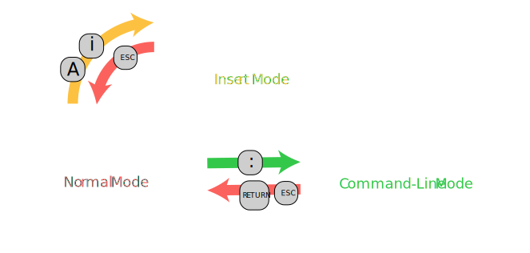

1 What is vi?
vi is a very, very old editor that is still used today.
To understand how it works, and why it works this way, we
have to go back in time:
1.1 ed
In 1969, when the operating system UNIX was first developed, Teleprinters (also called teletypewriters, or short TTY) were used as input and output devices for computers: a keyboard for input, and a printer for output.

For UNIX a line editor called ed was developed, that could be used on TTYs. ed distinguishes command mode from text mode, and always starts out in command mode.
In the following example session the user first types in the command a (for 'append') to enter text mode, and then enters two lines of text and a period on an empty line to leave text mode.
The editor gives no feedback at this point. The user enters the command p to print out the current line. Notice that only the current line is printed, not the whole file!
Next the user enters i (for 'insert'), modified by the number two to indicate that the text should be inserted twice (before the current line). The user enters a line of equal-signs and again a period on an empty line to end the text-input.
The user finally uses the command l to output the text with extra information: a $ sign for the line endings is printed. The comma before the l command selets the range of lines to be printed (here: all the lines). To print just lines 2 to 4 one would write 2,4l.
Then the user types in a substitution command s to replace the word "two" by the word "four". And finally the w (write) command to save the text to a file and q (quit) to exit the editor.
a ed is the standard Unix text editor. This is line number two. . p This is line number two. 2i ======================== . ,l ed is the standard Unix text editor.$ ========================$ ========================$ This is line number two.$ s/two/four/ p This is line number four.$ w about-ed.txt 88 q
1.2 ex
The next step was the editor ex which brought a slight change in interface: the input prompt is marked with a colon.
1.3 vi
With monitors came the next version of the editor: the visual editor vi.
It now displays the content of the file (one screen at a time), and offers a cursor - it almost looks and works like a modern text editor. But ed and ex are still there, in the normal mode and commandline of vi:

Using vi you have to be aware which mode the editor is in. There are only subtle visual clues to help you.

2 Basic Editing
2.1 Resources
- vim adventures
- Text Editor ed in Wikipedia
- Text Editor ex in Wikipedia